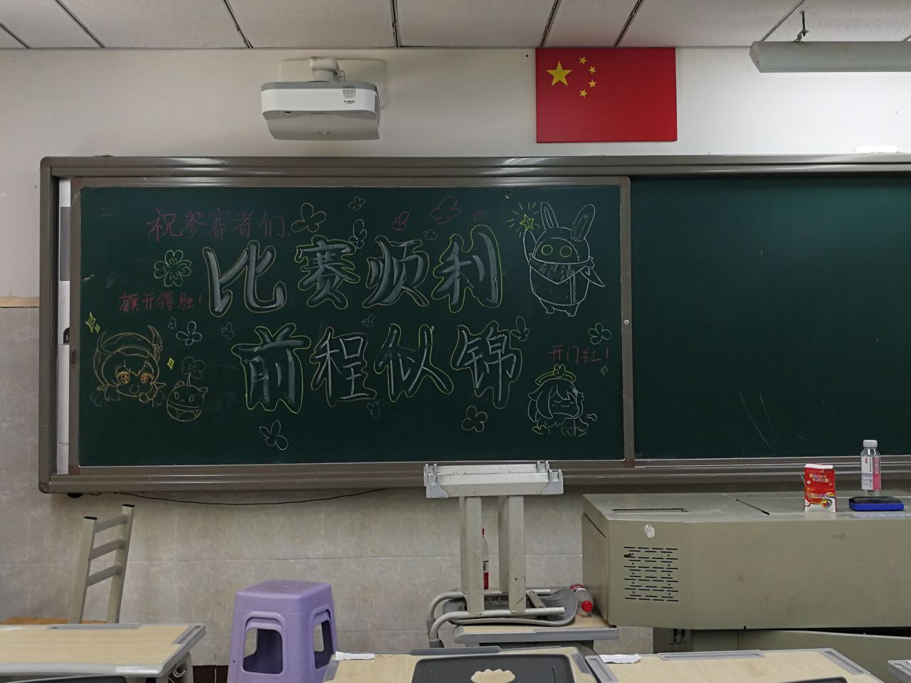
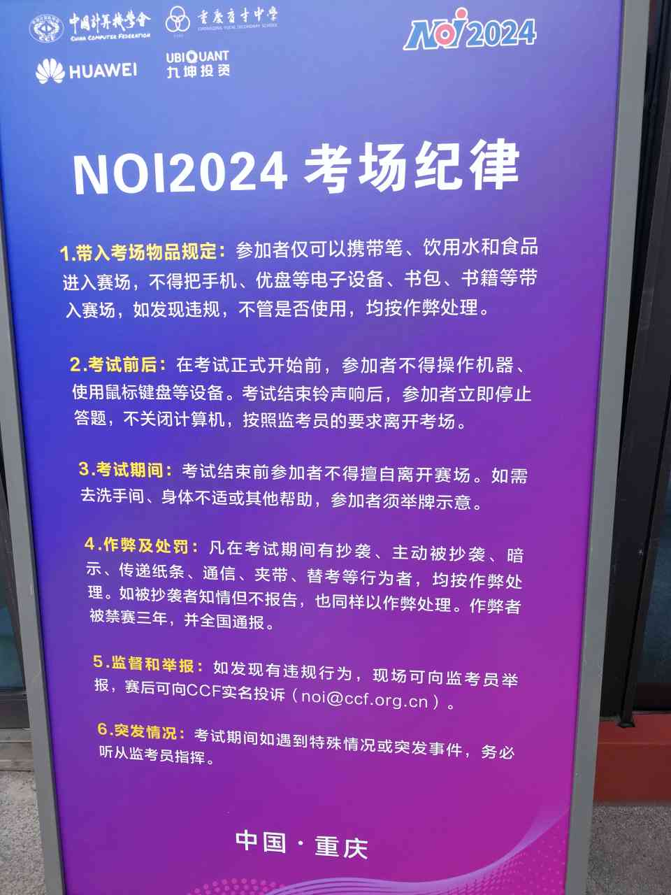

夏风终于越过繁华——NOI2024 游记
“你为什么来 NOI？”
「既然是蜉蝣寄于天地，就要随夏风羽化而起。」
NOI 广告居然都贴到校外了。报到的时候要签一张单子，现在只记得有一句，认同 CCF 的价值观。
开幕式上营销号式的 NOI 宣传片，展现主办方的特效水平；NOI 参赛选手从 90 人扩大到 500 人，多亏杜主席的济世情怀；为 NOI 专门写歌甚至编舞，彰显育才学生艺术修养。虽然填词的大约只知道 NOI 是一种比赛。最不知所云的是“顺序，结构，程序，循环”，姑且算，名词并列，没有语法错误。这次 NOI 有多少设计是懂 OI 的人完成的呢。
主办方提供除了衣物外的所有生活用品。我每晚八点半回寝室洗冷水澡然后洗衣服。这层楼的宿管是我见过的最热情的宿管。空闲时间有很多，用来看课件，练打字，考完就玩俄罗斯方块（SOJ1467）。食堂跟冬令营时一样好吃。报告厅的音响效果很好，也可能只是响度大，之前听过的歌，在这儿放，就感觉好听些。

$\bigtriangleup$ 这是我每天待的自习教室，有空调和插线板。比赛顺利，前程似锦。

$\bigtriangleup$ 自习教室附近有猫出没，极其亲人。睡觉时是走廊上的一滩，嚣张时窜上桌子趴电脑键盘。

$\bigtriangleup$ 试机前看到考场外摆的考场纪律和笔试题库有出入。笔试太不正经，还能下发去年选手答案的，还能和去年几乎一样的，那你咋不把历年真题公布一下？
D1T1 PDF 题面最后有句煽情的话，呼应密码 just remember，然而纸质题面没有。D2T1 也有类似的线索。我觉得 D1T1 和 D2T2 差不多难，都做了两个半小时，写了 3k 代码。幸运的是 D2T1 送了好多分，不幸的是 D1T2、D1T3 只能仓促了事。很多年以后，你可能会忘记 NOI 的分数，但不会忘记这个夏天你来过 NOI。故不记具体分数。
考试中间隔着一天社会活动，去三峡博物馆，好像又叫重庆博物馆。（总不能指望参加 NOI 的选手都对博物馆感兴趣吧。）抗战史给我的印象比较深，这些事件不只发生在重庆，但不可否认重庆的历史与文物值得占很大篇幅。
$\bigtriangleup$ 之前我校一二九汇演的一个道具。
$\bigtriangleup$ 找到周恩来的签名了吗？
Day2 考完有 NOI 嘉年华。团队项目玩的人少排队快，还有更多乐子。连嘉年华都有育才学生表演节目，育才学生的才艺咋这么多。不远千里从重庆拿回一盒杭州生产的文创《千里江山图》，椟比珠好看。
那些“身边统计学家”终会发现，认识的人普遍拿不到金牌，才是历史不变量。
为什么要攀登？因为山就在那里。很高兴，直到退役那天，我还能认出学 OI 的初心。五年 OI 如一梦，此身虽在堪惊。在 OI 降低随机性变革的大背景下，我赌出了高于 OIer 的期望收益的结局。去年 NOI 推出 selfeval，今年更有和正式测试点相同数量的预测试点，我没对拍也没挂分。到这个夏天为止，也见证了 OI 的繁荣，领略了 OIer 的芳华，不是吗？
两天的 PDF 密码拼起来是 just remember the life you want。Remember 这个词很妙，既回忆过去，又梦想未来。以后回想起来，NOI 可能是高中三年最闲的时光吧。
最后，引一段集训队论文作结：
感谢中国计算机学会提供学习与交流的平台。
感谢父母的养育之恩。
感谢所有对我有过帮助的老师和同学。